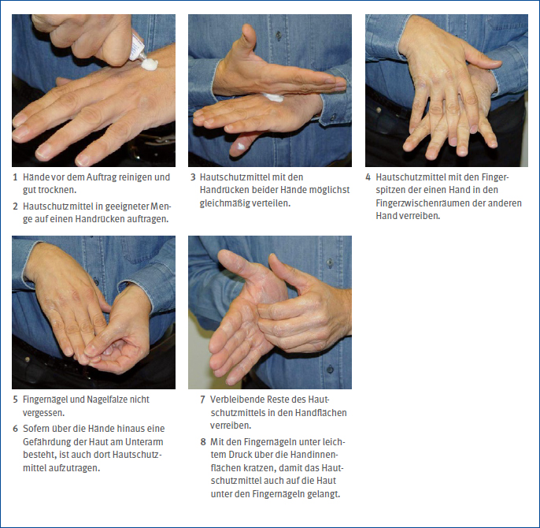

Unterstützung bei der Suche nach einer geeigneten Substitutionslösung gibt die TRGS 600 "Substitution" oder die Anlage 6 der TRGS 401 "Gefährdung durch Hautkontakt".
Durch geeignete Schutzmaßnahmen sollen Hautgefährdungen bei der beruflichen Tätigkeit minimiert werden. Dabei ist das STOP-Modell zu berücksichtigen:
Der Arbeitgeber oder die Arbeitgeberin hat im Rahmen der Informationsermittlung und Gefährdungsbeurteilung nach § 6 der Gefahrstoffverordnung die Möglichkeit der Substitution zu prüfen und unter Berücksichtigung der Kriterien nach TRGS 600 "Substitution" umzusetzen. Die Vermeidung oder die Verringerung der Gefährdung durch Substitution hat als Schutzmaßnahme Priorität. Sie umfasst die Vermeidung des Gefahrstoffs, den Ersatz durch einen weniger gefährlichen Stoff oder den Einsatz von Verfahren ohne oder mit geringerem Hautkontakt. Beispiele sind:
Unterstützung bei der Suche nach einer geeigneten Substitutionslösung gibt die TRGS 600 "Substitution" oder die Anlage 6 der TRGS 401 "Gefährdung durch Hautkontakt". |
Häufig kann nicht auf weniger gefährliche Arbeitsstoffe zurückgegriffen werden. Dann sind technische Schutzmaßnahmen anzuwenden, zum Beispiel bei:
Tätigkeiten mit Kühlschmierstoffen in der mechanischen Fertigung:
Tätigkeiten mit Lacken, Lösemitteln, Klebstoffen:
Tätigkeiten in der Galvanik:
Tätigkeiten im Freien (Sonnenstrahlung):
Sonstige Tätigkeiten:
Arbeitshygienische und organisatorische Maßnahmen sind zum Beispiel:
Bei Tätigkeiten im Freien (Sonnenstrahlung):
Lassen sich die Hautgefährdungen nicht durch Substitution oder technische und organisatorische Schutzmaßnahmen vermeiden oder ausreichend vermindern, müssen zusätzlich persönliche Schutzmaßnahmen ergriffen werden. Beispiele dafür werden in diesem Abschnitt sowie für spezielle Arbeitsbereiche in Abschnitt 6 beschrieben.
In der Metall- und Holzbranche werden überwiegend Schutzhandschuhe (Abschnitt 4.4.1) und Hautschutzmittel (Abschnitt 4.4.2) verwendet, darüber hinaus gegebenenfalls Augen- oder Gesichtsschutz, Schutzkleidung oder Schutzschürzen.
Bei der Auswahl persönlicher Schutzmaßnahmen haben geeignete Schutzhandschuhe Vorrang vor Hautschutzmitteln. Hautschutzmittel sollten nur dann gewählt werden, wenn das Tragen von Schutzhandschuhen nicht möglich oder nicht erlaubt ist, zum Beispiel bei Tätigkeiten an Maschinen mit Einzugsgefahr.
Bei mechanischen Gefährdungen kann ein praxisrelevanter Schutz nicht durch Hautschutzmittel, sondern nur durch einen geeigneten Schutzhandschuh bewirkt werden.
Allgemeines
Schutzhandschuhe gehören zur Persönlichen Schutzausrüstung (PSA). Sie sollen vor folgenden Gefährdungen schützen:
Die Kennzeichnung von Schutzhandschuhen zeigt, gegen welche Gefahren sie schützen. Bestandteile der Kennzeichnung sind neben dem CE-Zeichen auch die spezifischen graphischen Symbole (Abb. 4-1).

Abb. 4-1 Graphische Symbole nach DIN EN ISO 21420 "Schutzhandschuhe - Allgemeine Anforderungen und Prüfverfahren"
Das graphische Symbol "aufgeschlagenes Buch" der DIN EN ISO 21420 weist darauf hin, dass zusätzliche Informationen des Herstellers beachtet werden müssen (Anleitung und Information der Hersteller).
Für einige Gefährdungsarten, wie mechanische Risiken, Hitze und Feuer, Kälte und chemische Gefährdungen, werden zusätzlich zum graphischen Symbol noch die geprüften Eigenschaften und die dort erzielten Leistungsstufen angegeben. Das wird exemplarisch in Abb. 4-2 dargestellt.

Abb. 4-2 Graphisches Symbol für Schutzhandschuhe gegen mechanische Risiken nach DIN EN ISO 21420 mit Beispiel einer Kennzeichnung nach DIN EN 388
Die Leistungen von Schutzhandschuhen gegen mechanische Risiken werden nach der DIN EN 388 geprüft. Diese Norm legt die Anforderungen, Prüfverfahren und Kennzeichnung für Schutzhandschuhe gegen die mechanischen Risiken Abrieb, Schnitt, Weiterreißen und Durchstich fest. Die Erläuterung der Leistungsarten und Leistungsstufen ergibt sich aus Abb. 4-2. Die Leistungsstufen werden als Zahlen und/oder Buchstaben unter dem graphisches Symbol angegeben und reichen von niedrig (1, bzw. A) bis hoch (4, bzw. 5 oder F).
Nach DIN EN 388 stehen zwei Varianten zur Bestimmung der Schnitthemmung zur Verfügung: der klassische Coupe-Test und der TDM-Test. Im sogenannten Coupe-Test werden Prüfmuster unter konstantem Kraftaufwand mit einem rotierenden, sich entgegen der Rotationsrichtung hin- und her bewegenden Rundmesser geschnitten und das Ergebnis wird in Schutzstufen von 0 bis 5 umgerechnet.
Da Gestricke aus Hybridfasern mit anorganischen Bestandteilen (Glas, Metall etc.) in diesem Verfahren zu einer Abstumpfung der Klinge führen, sind die ermittelten Leistungsstufen für die Schnitthemmmung nur mangelhaft reproduzierbar. Für diese Bauarten steht das Testverfahren nach DIN EN ISO 13997 zur Verfügung (TDM-Test). Dabei wird die Schnitthemmung bei einem einmaligen Kontakt mit einer langen, geraden Klinge unter sich steigerndem Kraftaufwand bestimmt und die minimale Kraft zum Durchschnitt des Prüfmusters nach 20 Millimetern ermittelt. Für Schutzhandschuhe, die keine abstumpfenden Bestandteile beinhalten, bleibt die Prüfung mit dem Rundmesser nach DIN EN 388 bestehen.
Die Prüfmethoden der DIN EN 388 und der DIN EN ISO 13997 sind nicht miteinander vergleichbar. Die Leistungslevel nach DIN EN ISO 13997 werden in Form von Buchstaben angegeben (A bis F; A = geringster Kraftaufwand, F = höchster Kraftaufwand bis zum Durchschneiden des Prüfmusters).
Optional kann ein Handschuh auf seinen Schutz vor Stößen nach DIN EN 13594 geprüft werden. Ist der Test bestanden, wird dies mit dem Buchstaben "P" hervorgehoben.
4.4.1.2 Handschuhmaterialien
Die gängigsten Handschuhmaterialien sind derzeit:
Polymere
Polymere werden als Material für Chemikalienschutzhandschuhe, als Beschichtung für Strickhandschuhe sowie als Fasern eingesetzt (Abb. 4-3).

Abb. 4-3 Handschuhmaterialien aus Polymeren
Chemikalienschutzhandschuhe aus Elastomeren
Elastomere bestehen aus verknäulten, miteinander vernetzten Molekülketten, die sich bei Zug- und Druckbelastung verformen, danach jedoch wieder ihre ursprüngliche Form annehmen. Sie bilden aufgrund ihrer Elastizität die wichtigste Materialgruppe unter den Chemikalienschutzhandschuhen.
Zur Herstellung von Elastomeren werden häufig Vulkanisationsbeschleuniger wie Thiurame und Carbamate eingesetzt, die Allergien auslösen können. Ob und gegebenenfalls welche Allergie auslösende(n) Stoffe in Schutzhandschuhen bei der Herstellung verwendet werden, kann bei den Herstellern erfragt werden oder ist in der Handschuh-Allergenliste unter www.bgbau.de, Webcode: WCOTRi aufgeführt.
Latex (Naturlatex, NR = Natural Rubber, bzw. Syntheselatex, IR = Isoprene Rubber) ist ein hochflexibles Material mit guten mechanischen Eigenschaften und einem sehr guten Tragekomfort. Es eignet sich bei Kontakt mit nicht aggressiven Chemikalien, wie Wasser, handelsüblichen Reinigungsmitteln und anorganischen Säuren und Laugen. Latex ist jedoch nicht beständig gegenüber Kohlenwasserstoffen, zum Beispiel Ölen und vielen organischen Lösemitteln. Es findet daher im Holz- und Metallbereich wenig Anwendung (Ausnahme: Galvanik).
Polychloropren (CR = Chloroprene Rubber, Neopren®) ist wie Latex ein hochflexibles Material mit sehr guten Trageeigenschaften. Die Alterungs- und Chemikalienbeständigkeit, auch gegenüber Ölen, ist jedoch deutlich besser als bei Latex.
Nitrilkautschuk (NBR = Nitrile Butadiene Rubber) wird durch Polymerisation aus Acrylnitril und Butadien produziert. Chemikalienschutzhandschuhe aus Nitrilkautschuk finden breiten Einsatz im Holz- und Metallbereich, weil sie gegenüber zahlreichen Chemikalien beständig sind. Je nachdem, in welchem Mischungsverhältnis diese beiden Stoffe eingesetzt werden, können die Eigenschaften variieren. Allgemein gilt: Je höher der Acrylnitrilgehalt, desto besser ist die Öl- beziehungsweise Kohlenwasserstoff-, die Alterungs- und Chemikalienbeständigkeit. Mit steigendem Acrylnitril-Anteil wird der Handschuh jedoch auch steifer.
Butylkautschuk (Butyl, IIR = Isobutylene Isoprene Rubber) wird aus Isopren und Isobutyl hergestellt. Wie Latex hat dieses Material nur eine geringe Beständigkeit gegen Öle, Fette, aliphatische und aromatische Kohlenwasserstoffe und Chlorkohlenwasserstoffe. Butylkautschuk eignet sich vor allem zum Schutz vor Estern, Ketonen und Aldehyden (Bestandteile vieler Lacke).
Fluorkautschuk (FKM = Fluorkautschuk-Monomere, Viton®) ist ein extrem gasdichtes Material mit sehr hoher Chemikalien- und Alterungsbeständigkeit. Schutzhandschuhe aus Fluorkautschuk sind jedoch relativ teuer.
Schutzhandschuhe aus Plasten
Polyvinylchlorid (Vinyl, PVC), Polyvinylalkohol (PVA), Polyethylen (PE) und Polyamid (PA) gehören zu den Thermoplasten. Sie bestehen aus unvernetzten, wenig oder nicht verzweigten (linearen) Kohlenstoffketten.
Polyvinylchlorid ist charakterisiert durch eine geringe Flexibilität, die durch Zusatz von Weichmachern kompensiert werden kann. Schutzhandschuhe aus Vinyl sind mechanisch kaum belastbar. Sie sind beständig gegen alkalische Lösungen (Laugen) und nicht-oxidierende Säuren, zum Beispiel Salzsäure. Bei Kontakt mit organischen Lösemitteln werden die Weichmacher herausgelöst, so dass der Handschuh spröde und damit unbrauchbar wird.
Polyvinylalkohol ist ein wasserlöslicher Thermoplast und daher als Material für Schutzhandschuhe nur sehr eingeschränkt geeignet.
Polyethylen und Polyamid werden im Bereich von Schutzhandschuhen nicht als Beschichtungsmaterial, sondern als Kunstfaser für Gewebehandschuhe (Strickhandschuhe) eingesetzt. Polyethylen wird auch in Laminaten verwendet.
Polyurethan gehört zu den Duroplasten. Dabei handelt es sich um stark quervernetzte Kunststoffe, die deutlich härter und spröder als Thermoplaste sind. Polyurethan wird zur Beschichtung von Strickhandschuhen verwendet.
Laminate
Als Laminate werden Handschuhe bezeichnet, die aus mehreren Schichten unterschiedlicher Materialien zusammengeschweißt werden, zum Beispiel Polyethylen oder Polyvinylalkohol. Sie eignen sich für spezielle Einsatzbereiche, in denen der Kontakt mit Gefahrstoffen durch andere Chemikalienschutzhandschuhe nicht ausreichend vermieden werden kann. Nachteilig ist die geringe Reißfestigkeit der Nähte, die Steifigkeit des Materials und der eingeschränkte Tragekomfort.
Strick und Gewebe
Strick- und Gewebehandschuhe können je nach Ausführung gegen mechanische und thermische Belastungen der Haut schützen. Ferner können sie auch im Produktschutz und als Unterziehhandschuh getragen werden. Als Materialien werden Baumwolle, Polyamid sowie schnitthemmende Materialien wie Aramide, ultrahochmolekulares Polyethylen oder schnitthemmende Hybridgarne eingesetzt.
Entscheidend für die Eigenschaften der Handschuhe sind die eingesetzten Gewebe. So bietet zum Beispiel Aramid-Gewebe einen guten Schnitt- und Hitzeschutz, Baumwollgewebe wird als Unterziehhandschuh oder Trägermaterial für kunststoffbeschichtete Handschuhe verwendet.
Reine Stoff- und Gewebehandschuhe sind feuchtigkeitsdurchlässig (nicht okklusiv wirkend), so dass der Hautschweiß an die Umgebung abgegeben werden kann. Sie sind als Schutz gegen Flüssigkeiten wie Wasser, Öl und Fett nicht geeignet.
Beschichtete Gewebehandschuhe werden als Montagehandschuhe für Arbeiten mit höheren Anforderungen an das Tastempfinden eingesetzt. Je nach Trägermaterial können sie auch gute schnitthemmende Eigenschaften bieten.
Bei beschichteten Gewebehandschuhen handelt es sich nicht um Chemikalienschutzhandschuhe. Sie sind für Tätigkeiten mit Flüssigkeiten nicht geeignet. Wenn mit flüssigen Medien gearbeitet wird, werden teilbeschichtete Schutzhandschuhe durchfeuchtet und es kommt zu einem intensiven Hautkontakt mit dem flüssigen Arbeitsstoff.
Leder
Lederhandschuhe werden zum Schutz vor mechanischen und thermischen Belastungen eingesetzt. Auch Schweißerschutzhandschuhe bestehen aus Leder.
Der überwiegende Teil der betrieblich eingesetzten Lederhandschuhe wird aus chromgegerbtem Leder hergestellt, da dieses mechanisch und thermisch widerstandsfähig, gleichzeitig aber auch weich und gut haltbar ist. Bei chromgegerbten Lederhandschuhen ist darauf zu achten, dass der Chrom-VI-Gehalt wegen der Allergie auslösenden Wirkung normenkonform unter der Nachweisgrenze liegt (3 mg/kg Leder). Leder für Arbeitsschutzhandschuhe können auch in chromfreien Gerbverfahren produziert werden, sind dann jedoch weniger widerstandsfähig gegenüber mechanischen Belastungen.
Grundsätzlich sollten Lederhandschuhe nur in trockenen Arbeitsbereichen benutzt werden. Sie sind flüssigkeitsdurchlässig und schützen daher nicht bei Kontakten mit Flüssigkeiten wie Kühlschmierstoffen oder Ölen. Sofern keine schnitthemmende Fütterung eingearbeitet ist, sind sie auch nicht für Tätigkeiten mit scharfen Gegenständen geeignet. Je nach Art des Leders haben Lederhandschuhe jedoch teilweise eine gute Durchstichfestigkeit und eignen sich dann für den Umgang mit grathaltigen Werkstücken.
4.4.1.3 Chemikalienschutzhandschuhe
Chemikalienschutzhandschuhe sollen vor der Einwirkung von Gefahrstoffen schützen. Daher darf sich der Handschuh beziehungsweise das Handschuhmaterial beim vorgesehenen Kontakt zum Gefahrstoff durch diesen nicht verändern.
Das Eindringen von Stoffen durch makroskopisch kleine Löcher, zum Beispiel durch poröse Materialien, Nähte oder Nadellöcher, bezeichnet man als Penetration.
Veränderungen wie Schuppenbildung, Quellung, Auflösung oder Versprödung des Handschuhmaterials bezeichnet man als Degradation.
Trifft ein Stoff auf die Oberfläche eines Chemikalienschutzhandschuhs, kann er vom Handschuhmaterial aufgenommen werden (Absorption), durch das Handschuhmaterial wandern (Permeation) und auf der Handschuhinnenseite abgegeben werden (Desorption). Dieser Prozess kann ohne Materialveränderungen ablaufen und ist daher für die anwendenen Personen auch "äußerlich" oft nicht erkennbar.
Die Zeitspanne vom ersten Kontakt der Chemikalie mit der Handschuhoberfläche bis zum Austritt auf der Innenseite bezeichnet man als Durchbruchszeit (DBZ). Sie wird labortechnisch unter Standardbedingungen (DIN EN 16523-1, ehemals DIN EN 374-3) bei 23 °C und Dauerkontakt mit einer Prüfchemikalie bestimmt. Der Norm entsprechend ist die Durchbruchzeit erreicht, wenn 1 µg · cm2 · min-1 der Prüfchemikalie auf der Handschuhinnenseite gemessen werden. Je nach Dauer der Durchbruchzeit wird dem Handschuh für diese Chemikalie ein Schutzindex zugeordnet (Leistungslevel).
Die normenkonforme Bestimmung der Durchbruchzeit dient hauptsächlich dem Vergleich verschiedener Produkte. Sie repräsentiert nicht die Bedingungen, die in der Praxis angetroffen werden. Zur Abschätzung der maximalen Tragedauer in der Praxis müssen zusätzlich thermische und mechanische Einflüsse berücksichtigt werden. Daher ist die maximale Tragedauer im Betrieb immer geringer als die unter Standardbedingungen ermittelte Durchbruchszeit. Gemäß TRGS 401 ist sie auf ein Drittel zu kürzen. Die Hersteller von Chemikalienschutzhandschuhen können auf Basis spezifischer Messungen abweichende Angaben machen.
Die Leistung von Chemikalienschutzhandschuhen gegenüber Chemikalien wird entsprechend der Norm DIN EN ISO 374-1 bestimmt. Die Bestimmung der Permeation erfolgt nach der DIN EN 16523-1 (Tabelle 4-1).
Tabelle 4-1 Normen zur Leistungsbeschreibung von Chemikalienschutzhandschuhen

Die Anforderungen an Schutzhandschuhe gegen gefährliche Chemikalien werden in der DIN EN ISO 374-1 definiert. Wenn weitere Anforderungen, zum Beispiel in Bezug auf mechanische oder thermische Risiken notwendig sind, muss zusätzlich die entsprechende spezifische Leistungsnorm verwendet werden. Eine Aufstellung der relevanten Normen befindet sich in Anhang 1 "Literaturverzeichnis" und in Tabelle 4-1.
In der DIN EN ISO 374-1 werden die Schutzindices in Bezug auf die Durchbruchzeit (DBZ) definiert (Tabelle 4-2). Auch die festgelegten Prüfsubstanzen sind in dieser Norm aufgeführt (Tabelle 4-3). Weiterhin werden in der DIN EN 374-1 die Kennzeichnungselemente geregelt (Abb 4-4).
Tabelle 4-2 Leistungsstufen nach Permeation (DIN EN ISO 374-1)

Tabelle 4-3 Liste der Prüfchemikalien nach DIN EN ISO 374-1


Abb. 4-4 Kennzeichnung von Chemikalienschutzhandschuhen nach DIN EN ISO 21420 mit den Anforderungen nach DIN EN 374-1
Alle flüssigkeitsdichten Handschuhe können das graphische Symbol "Erlenmeyerkolben" tragen, wenn sie einem der folgenden 3 Typen entsprechen:
4.4.1.4 Auswahl von Schutzhandschuhen
Bei der Auswahl von Schutzhandschuhen sind im Rahmen der Gefährdungsbeurteilung die Anforderungen an die Schutzhandschuhe festzulegen. Die genormten Leistungsanforderungen, zum Beispiel mechanische Gefährdungen, Hitze, Kälte und Chemikalienschutz, mit den unterschiedlichen Leistungsstufen helfen dabei, einen auf die Bedürfnisse des Arbeitsplatzes abgestimmten Handschuh auszuwählen. Dabei ist zum Beispiel der Chemikalienschutz oder die Schnitthemmung für den Einsatz an einem bestimmten Arbeitsplatz nur eine mögliche Anforderung an den Schutzhandschuh.
Beständigkeit gegenüber Schnitten
Die Bewertung der Schnitthemmung spielt bei vielen Tätigkeiten in der Holz- und Metallbranche eine zentrale Rolle. Die gemäß der DIN EN 388 ermittelten Schutzlevel sollten jedoch nur als Anhaltspunkte herangezogen werden, da normenkonforme Prüfungen dem Leistungsvergleich dienen und nicht die vielfältigen Bedingungen in der Praxis wiedergeben können.
In den Normen werden beispielsweise glatte, geschliffene Klingen eingesetzt. In der Praxis wird oft mit ungeschliffenen oder grathaltigen Werkstücken gearbeitet. Auch sind die Klinge und das Handschuhmaterial in der Norm trocken und nicht verölt oder feucht. Der Schnittwinkel und die Griffsicherheit haben ebenfalls einen Einfluss auf die Schnittgefährdung in der Praxis. Eine hohe Beständigkeit gegenüber Schnitten entsprechend der Norm ist nicht gleichbedeutend mit einem ebenso hohen Schutz in der Praxis. Nicht selten erweist sich ein schnitthemmender Schutzhandschuh mit mittlerem Schutzlevel in der Praxis als besser geeignet als einer mit dem höchsten Schutzlevel. Zudem haben Schutzhandschuhe mit sehr hoher Beständigkeit gegenüber Schnitten häufig ein schlechteres Griffgefühl, sind weniger feinfühlig und führen zu einer rascheren Handermüdung.
Die Ergebnisse der Normenprüfungen sollten jedoch orientierend für eine Vorauswahl herangezogen werden. Die Eignung eines schnitthemmenden Schutzhandschuhs für eine spezifische Tätigkeit lässt sich dann durch Trageversuche in der Praxis ermitteln. Wichtig ist die Überprüfung der Wirksamkeit, mit der die Auswahl eines Handschuhmodells entweder bestätigt oder widerrufen wird.
Beständigkeit gegenüber Gefahrstoffen
Bei Tätigkeiten mit Gefahrstoffen ist die Auswahl eines geeigneten Schutzhandschuhs von besonderer Bedeutung. Informationen dazu sind im Abschnitt 8 des Sicherheitsdatenblatts aufgeführt. Die REACH-Verordnung Art. 31 in Verbindung mit Anhang II (8.2.2.2) schreibt für das Sicherheitsdatenblatt nachfolgende Angaben zum Handschutz vor [Quelle: REACH Verordnung, deutsche konsolidierte Fassung vom 01.01.2020]:
"Der Typ der bei der Handhabung des Stoffs oder Gemischs erforderlichen Schutzhandschuhe ist auf der Grundlage der mit dem Stoff oder dem Gemisch verbundenen Gefahr und der Wahrscheinlichkeit eines Kontakts sowie im Hinblick auf Umfang und Dauer der Hautexposition eindeutig anzugeben. Weitere Angaben betreffen:
Falls erforderlich, sind zusätzliche Maßnahmen zum Handschutz anzugeben." (Anhang II der Verordnung (EG) Nr. 1907/2006 (Reach-Verordnung))
Wird im Sicherheitsdatenblatt ein konkretes Handschuhfabrikat benannt, muss der Arbeitgeber oder die Arbeitgeberin prüfen, ob es bei der vorgesehenen Tätigkeit einen ausreichenden Schutz gegen alle Gefährdungen bietet. In den Sicherheitsdatenblättern finden sich jedoch nach wie vor Angaben wie "Gummihandschuhe verwenden", die bei der Auswahl eines geeigneten Chemikalienschutzhandschuhs nicht ausreichend sind. Somit muss der Arbeitgeber oder die Arbeitgeberin im Rahmen der Ermittlungspflicht nach der Gefahrstoff-Verordnung (GefStoffV) feststellen, welcher Chemikalienschutzhandschuh für den konkreten Anwendungsfall einzusetzen ist. Je nach Tätigkeit und verwendeten Arbeitsstoffen muss ein hinreichend beständiger, CE-gekennzeichneter Schutzhandschuh für den speziellen Einsatzzweck ausgewählt werden [Quelle TRGS 401].
Neben der ausreichenden chemischen Beständigkeit müssen auch mechanische und thermische Anforderungen berücksichtigt werden, um den geeigneten Schutzhandschuh in der passenden Bauart auszuwählen. Ferner sind ergonomische Aspekte, zum Beispiel in Bezug auf die Größe und Passform sowie auf das notwendige Tastempfinden und die Griffsicherheit, bei der Auswahl zu beachten.
Ein Ablaufdiagramm zur Auswahl geeigneter Schutzhandschuhe enthält die Anlage 8 der TRGS 401. Weitere Auswahlhilfen bietet die DGUV Information 212-007 "Chemikalienschutzhandschuhe" mit der in Anhang 1 enthaltenen Checkliste zur Auswahl von Schutzhandschuhen. Anhang 3a der DGUV Information 212-007 erklärt die Handhabung von Chemikalienschutzhandschuhen. Anhang 4 gibt eine Hilfe zur Auswahl der Handschuhgröße.
Die Einbeziehung der Beschäftigten bereits bei der Auswahl der Schutzhandschuhe ist ein wesentlicher Faktor für eine gute Trageakzeptanz.
Nur geeignete Schutzhandschuhe schützen optimal. Bedingt geeignete oder völlig ungeeignete Schutzhandschuhe hingegen täuschen Sicherheit vor und verleiten die Personen, die sie tragen, zu einem sorgloseren Umgang mit den Arbeitsmaterialien oder Arbeitsstoffen ohne ausreichenden Schutz.
Als Orientierung bei der Auswahl von Schutzhandschuhen wurden in den Tabellen des Abschnitts 6 Schutzhandschuhmaterialien verschiedenen Arbeitsbereichen und -stoffen zugeordnet.
Bei der Auswahl geeigneter Schutzhandschuhe beraten auch die Präventionsdienste der Unfallversicherungsträger und die Hersteller von Schutzhandschuhen.
4.4.1.5 Benutzung von Schutzhandschuhen
In der Praxis zeigt sich, dass ein optimaler Schutz beim Tragen von Schutzhandschuhen nur dann erreicht werden kann, wenn die Handschuhe auch sachgerecht verwendet werden. Die wichtigsten Regeln im Umgang mit Schutzhandschuhen:

Abb. 4-5 Beispiel für das Trocknen von Schutzhandschuhen

Abb. 4-6 Schutzhandschuhe mit umgeschlagener Stulpe

Abb. 4-7 Reinigen von Schutzhandschuhen

Abb. 4-8 Richtiges Ausziehen von Chemikalienschutzhandschuhen
DGUV Regel 112-195 und 112-995 "Benutzung von Schutzhandschuhen" |
Werden Chemikalienschutzhandschuhe über einen längeren Zeitraum verwendet, kann die Haut durch den sich bildenden Schweiß quellen. Es gibt Hinweise darauf, dass es durch die Kombination aus Okklusion (durch längeres Benutzen von Chemikalienschutzhandschuhen) und Händewaschen zu Barrierestörungen kommen kann. Auch kann die mechanische Belastbarkeit nach dem Tragen von Handschuhen verringert und die Regeneration der Haut verzögert sein. Die regelmäßige Anwendung von Hautpflegemitteln in der arbeitsfreien Zeit spielt daher in der Prävention von Hauterkrankungen eine maßgebliche Rolle.
Um übermäßige Schweißbildung zu vermeiden, sollten flüssigkeitsdichte Handschuhe rechtzeitig gewechselt werden. Empfehlenswert ist der Einsatz von gefütterten Chemikalienschutzhandschuhen oder das Tragen von zusätzlichen Gewebe-Unterzieh-Handschuhen, die bei einer Durchfeuchtung gewechselt werden müssen.
Bei Tätigkeiten an Maschinen muss sichergestellt werden, dass durch das Tragen von Schutzhandschuhen keine zusätzliche Verletzungsgefahr besteht, zum Beispiel durch Erfasstwerden von beweglichen Teilen. Ergibt die Gefährdungsbeurteilung, dass aufgrund der Verletzungsgefahr keine Schutzhandschuhe getragen werden dürfen, sind die Arbeitsbereiche entsprechend der Arbeitsstättenverordnung Anhang "Anforderungen an Arbeitsstätten nach § 3 Abs. 1 Abschnitt 1.3" (ASR A1.3). zu kennzeichnen. Die Verwendung der Gebots- und Verbotszeichen hat sich in der Praxis bei der Erstellung von Betriebsanweisungen bewährt.

Abb. 4-9 Gebots- und Verbotszeichen gemäß ASR A1.3 "Sicherheits- und Gesundheitsschutz-Kennzeichnung", Ausgabe Februar 2013
Hautmittel umfassen Hautschutz-, Hautreinigungs- und Hautpflegemittel. Bei der Auswahl von Hautmitteln sollte auf eine gute Hautverträglichkeit und ein niedriges allergenes Potential geachtet werden. Wichtig ist ein möglichst geringer Anteil an Duft- und Konservierungsstoffen. Auf Konservierungsstoffe mit hohem Sensibilisierungspotential sollte verzichtet werden.Das sind beispielsweise Chlormethylisothiazolinon (CMI), Methylisothiazolinon (MI), Iodpropinylbutylcarbamat und Bronopol (2-Bromo-2-Nitropropane-1,3-Diol). CMI und MI dürfen gemäß Kosmetikverordnung in Hautmitteln, die auf der Haut verbleiben (leave-on-Produkte), wie Hautschutzmitteln und Hautpflegemitteln, nicht mehr verwendet werden. Verwendungsbeschränkungen gibt es auch für Iodpropinylbutylcarbamat.
4.4.2.1 Zubereitungsformen von Hautschutz- und Hautpflegemitteln
Hautschutz- und Hautpflegemittel werden in vielfältiger Form, zum Beispiel als Emulsion (Creme, Lotion), Gel oder Schaum, angeboten. Nachfolgend wird ein kurzer Überblick über die wichtigsten Zubereitungsformen gegeben.
Emulsionen
Bei den meisten Hautschutz- und Hautpflegemitteln handelt es sich um Emulsionen. Je nach Konsistenz werden sie in Form von Cremes oder Lotionen angeboten.
Die Basis derartiger Systeme bilden Wasser und Fette beziehungsweise Öle. Da diese beiden Komponenten nicht miteinander mischbar sind, werden Emulgatoren zugesetzt, die aufgrund ihres speziellen Aufbaus gewissermaßen eine Brücke zwischen den Wasser- und den Ölmolekülen bilden (Abb. 4-10). Je nach Mischungsverhältnis entsteht ein stabiles Gemisch, in dem entweder das Öl im Wasser oder das Wasser im Öl als fein verteilte Tröpfchen vorliegt. Man spricht von Öl-in-Wasser (O/W) und Wasser-in-Öl (W/O)-Emulsionen. Typische Alltagsbeispiele sind Milch für eine O/W-Emulsion und Butter für eine W/O-Emulsion.
Bei O/W-Emulsionen umschließt Wasser die fein verteilten Öltröpfchen. Derartige Emulsionen lassen sich leicht verteilen, ziehen schnell und rückstandslos ein und kühlen die Haut. Sie eignen sich zur Anwendung auf normaler Haut. Daneben werden sie bei akuten, nässenden Hautveränderungen eingesetzt.

Abb. 4-10 Emulsionstypen
Demgegenüber sind bei W/O-Emulsionen Wassertröpfchen in Öl verteilt. W/O-Emulsionen hinterlassen einen leichten Fettfilm auf der Haut. Dieser bewirkt nicht nur eine Rückfettung bei trockener Haut, sondern schützt auch vor Feuchtigkeitsverlust. W/O-Emulsionen werden vor allem bei trockener, rauer Haut eingesetzt.
Emulsionen können zusätzlich weitere Komponenten enthalten, zum Beispiel Füllstoffe, Stabilisatoren, Konservierungs- und Duftstoffe. Hautschutzmittel enthalten oft weitere Bestandteile, zum Beispiel adstringierende Stoffe (wie Gerbstoffe), anorganische Aluminiumsalze, Pigmente oder gewisse filmbildende Substanzen. UV-Schutzmittel enthalten spezielle Inhaltsstoffe (UV-Filter und Pigmente), die vor UV-Strahlung schützen. Hautpflegemittel enthalten oft spezielle Feuchthaltesubstanzen, wie Urea oder Glycerin.
Gele
Bei Gelen handelt es sich um Flüssigkeiten, die mit Quellmitteln (Gelbildnern) verfestigt werden. Basiert das Gel auf einer wasserlöslichen Flüssigkeit, zum Beispiel Wasser, Alkohol, Glycerol oder Propylenglycol, entstehen die fettfreien Hydrogele. Sie werden mit Quellstoffen wie Poloxameren, Stärke, Cellulose-Derivaten, Carbomeren oder Magnesium-Aluminium-Silicaten geliert. Setzt man Öle als Basis ein, entstehen die sogenannten Oleogele. Als Quellstoffe können beispielsweise Polyethylen, kolloidales Siliciumdioxid, Aluminium- oder Zink-Seifen verwendet werden.
Die fettfreien Hydrogele werden oft als Grundlage für UV- oder Hautschutzmittel eingesetzt. Sie haben einen starken Kühleffekt.
Schäume
Schäume oder Schaumcremes werden aus flüssigen oder halbfesten Emulsionen hergestellt. Sie werden in einem Druckbehältnis mit einem Treibmittel, zum Beispiel Propan oder Butan beaufschlagt. Durch das schlagartige Verdampfen des Treibmittels bei der Anwendung wird die Emulsion aufgeschäumt. Schäume lassen sich leicht verteilen und ziehen gut ein.
Liposomale Systeme
Liposomen sind mikroskopisch kleine, wassergefüllte Hohlkörper, die von Lipiddoppelschichten umgeben sind (Abb. 4-11). Zur Bildung der Lipiddoppelschichten werden in Hautcremes sogenannte Phospholipide eingesetzt, deren Hauptbestandteil das aus der Sojapflanze stammende Phosphatidylcholin (Lecithin) ist.

Abb. 4-11 Aufbau von Liposomen (Kreise = hydrophile Köpfe, gewellte Linien = lipophile Fettsäureketten)
Aufgrund ihres Aufbaus dringen Liposome leicht in die Haut ein und werden dort in der Barriereschicht gebunden. Sie werden meistens als Träger für bestimmte Wirkstoffe, zum Beispiel UV-Filter, genutzt. So lassen sich wasserlösliche Wirkstoffe im Kern der Liposomen einschließen. Fettlösliche Stoffe können in den Lipiddoppelschichten deponiert werden. Die Wirkstoffe können auf diese Weise gezielt in die Haut eingeschleust und dort freigesetzt werden.
Lamellare Systeme
Lamellare Systeme entstehen aus Wasser und hautverwandten Lipiden, zum Beispiel Ceramiden und auch Lecithin. Mit Hilfe eines speziellen Herstellungsverfahrens bildet sich eine stabile, emulsionsartige Zubereitung, die keine klassischen Emulgatoren benötigt.
Charakteristisch für diese Cremes sind schichtartig angeordnete Doppelmembranen (Bilayer), die erst unter elektronenmikroskopischer Vergrößerung sichtbar werden. Strukturbildende Komponenten der emulgatorfreien Cremes sind Phosphatidylcholin (Baustein der Zellmembranen) und Ceramide (Bestandteile der Hautbarriere).
4.4.2.2 Hautschutzmittel
Hautschutzmittel sind äußerlich anzuwendende Produkte, die vor einer hautbelastenden Tätigkeit auf die saubere Haut aufgetragen werden und die Haut vor allem vor Irritationen schützen sollen. Grundlage für die Auswahl eines geeigneten, für einen bestimmten Einsatzbereich wirksamen Hautschutzmittels ist immer die Gefährdungsbeurteilung (siehe Abschnitt 3 Gefährdungsbeurteilung).
Das klassische Einsatzgebiet für Hautschutzmittel sind die Feuchtarbeit sowie Tätigkeiten mit schwach hautreizenden Stoffen, wenn keine Schutzhandschuhe getragen werden dürfen oder können.
Hautschutzmittel bilden keine geschlossene "Schutzbarriere" wie Schutzhandschuhe. Überall dort, wo Kontakt zu Chemikalien, wie organische Lösemittel, Oberflächenbehandlungsmittel, Industriereiniger, Kaltreiniger etc. besteht, sind Hautschutzmittel nicht wirksam. Ferner schützen Hautschutzmittel nicht oder nur unmaßgeblich vor mechanischen Belastungen und können bei bestehenden Sensibilisierungen den Kontakt mit dem Allergen nicht unterbinden.
Die Schutzwirkung eines Hautschutzmittels für einen bestimmten Einsatzbereich muss vom Hersteller für den angegebenen Einsatzbereich mit einem Wirksamkeitsnachweis nach einer dafür geeigneten Methode belegt werden. Der Leitlinie "Berufliche Hautmittel: Hautschutz, Hautpflege und Hautreinigung" der Arbeitsgemeinschaft Wissenschaftlicher Medizinischer Fachgesellschaften (S1-AWMF-Leitlinie) zufolge sollten Wirksamkeitsnachweise vorzugsweise durch In-vivo-Verfahren (zum Beispiel wiederkehrende Irritation an menschlicher Haut) überprüft werden. Alle anderen Verfahren haben nur einen orientierenden Charakter, da sie physiologische Effekte unberücksichtigt lassen und daher die Aussagekraft zur Beurteilung der Wirksamkeit sehr begrenzt ist.
Von der gleichzeitigen Anwendung von Hautschutzmitteln und Schutzhandschuhen wird nach dem aktuellen Kenntnisstand abgeraten, da sie die Schutzwirkung von Schutzhandschuhen beeinträchtigen und gegebenenfalls Inhaltsstoffe aus Schutzhandschuhen herauslösen können. Zudem konnte bisher wissenschaftlich nicht belegt werden, dass sich die Anwendung von Hautschutzmitteln unter Schutzhandschuhen positiv auf den Hautzustand auswirkt.
Tabelle 4-4 Einsatzmöglichkeiten für Hautschutzmittel bei Gefährdung durch Hautkontakt

Die Anwendung von Hautschutzmitteln zur Erleichterung der Hautreinigung führt zwar zu einer hautschonenderen Entfernung der Verschmutzung, jedoch schützen sie nicht zwangsläufig vor den Bestandteilen des Schmutzes. Verschmutzungen, wie gebrauchte Öle oder Oberflächenbeschichtungsmittel, können gesundheitsgefährdende Stoffe enthalten, die über die Haut aufgenommenwerden.
Neben einer tätigkeitsspezifischen Wirksamkeit, einer guten Hautverträglichkeit und einem geringen allergenen Potential sind bei der Auswahl von Hautschutzmitteln zusätzlich arbeitsplatzspezifische Anforderungen zu berücksichtigen. So kann es wichtig sein, dass beim Hantieren an den Werkstückoberflächen keine Fingerabdrücke durch das Hautschutzmittel entstehen. Im Einzelfall müssen auch individuelle Faktoren berücksichtigt werden, zum Beispiel bekannte Allergien auf Inhaltstoffe von Hautmitteln.
Wird das vom Betrieb zur Verfügung gestellte Hautschutzmittel von einzelnen Beschäftigten nicht vertragen, sind die Vorgesetzten, die Fachkraft für Arbeitssicherheit oder die Betriebsärztin und der Betriebarzt geeignete Ansprechpersonen.
Eine ausführliche Abhandlung zur Auswahl von Hautschutzmitteln bietet die DGUV Information 212-017 "Auswahl, Bereitstellung und Benutzung von beruflichen Hautmitteln".
Anwendung von Hautschutzmitteln
Ein geeignetes Hautschutzmittel kann nur dann wirksam sein, wenn es regelmäßig und korrekt verwendet wird. Dazu gehört auch das richtige Auftragen auf die Haut, das häufig nicht genug beachtet wird (Abb. 4-12). Die Vorbehalte der Beschäftigten gegen die Verwendung fettender Hautschutzmittel können durch die Information über die richtige Anwendung deutlich gemindert werden.

Abb. 4-12 Richtige Anwendung von Hautschutzmitteln
Ergibt sich trotz der geschilderten Anwendung (siehe auch Abb. 4-12) und unter Berücksichtigung einer sorgfältigen Verteilung des Hautschutzmittels ein "glitschiger Griff", sollte die aufgetragene Menge angepasst werden.
Das richtige Auftragen von Hautschutzmitteln lässt sich visualisieren. Unter einer UV-Lampe kann nach Benutzen einer fluoreszierenden Spezialcreme geprüft werden, ob ein ausreichender Schutzfilm mit einer Hautcreme aufgetragen wurde. Damit können Defizite beim Auftragen einfach erkannt werden, da nicht eingecremte Stellen im UV-Licht nicht fluoreszieren und als dunkle Bereiche erscheinen (Abb. 4-13).

Abb. 4-13 Typisches Beispiel für unzureichenden Hautschutz im Bereich der Fingerzwischenräume und des Daumens
4.4.2.3 Hautreinigungsmittel
Die Hautreinigung zählt zu den grundlegenden Maßnahmen der persönlichen Arbeitshygiene, bei der anhaftende Verschmutzungen vor den Arbeitspausen und nach der Arbeit entfernt werden.
Bestandteile von Hautreinigungsmitteln können sein:
Jede Hautreinigung belastet die Haut. Besonders bei häufiger Verwendung aggressiver Hautreinigungsmittel können berufsbedingte Hauterkrankungen entstehen. Die Auswahl des Hautreinigungsmittels richtet sich daher im Wesentlichen nach der Art und dem Ausmaß der Hautverschmutzung und sollte unter dem Motto "so hautschonend wie möglich, so effektiv wie nötig" erfolgen. Bürsten und lösungsmittelhaltige Arbeitsstoffe sollten zur Hautreinigung grundsätzlich nicht eingesetzt werden.
Reibekörperhaltige Hautreinigungsmittel sollten nur dann benutzt werden, wenn das Tragen von Schutzhandschuhen zur Vermeidung der Verschmutzungen nicht möglich oder verboten und trotz Anwendung spezifischer Hautschutzmittel eine ausreichend gute Hautreinigung ohne reibekörperfreie Hautreinigungsmittel nicht gewährleistet ist.
Waschaktive Substanzen (Tenside)
Tenside haben unterschiedliche Reinigungswirkungen und Hautverträglichkeiten. Nichtionische Tenside auf der Basis von Polyethylenoxid-Abkömmlingen, zum Beispiel PEG-80 Sorbitan Laurate, reinigen hautschonender als anionische und amphoterische Tenside. Vor allem anionische Tenside, wie Sodium Lauryl Sulfate, Alkylbenzolsulfonate, Alkylsulfonat und Seife können je nach Konzentration und Anwendungsart eine Hautreizung bewirken.
Als Faustregel gilt: je besser die Reinigungswirkung des Tensids ist, umso schlechter ist seine Hautverträglichkeit. Dies erläutert Tabelle 4-5. Da in Hautreinigungsmitteln meistens jedoch mehrere Tenside eingesetzt werden, sind Gesamtrezeptur und Kombinationswirkung entscheidend für die Hautverträglichkeit und den Reinigungseffekt.
Tabelle 4-5 Reinigungswirkung und Hautverträglichkeit in den Tensidklassen

Reibekörper (Abrasiva)
Der Einsatz reibekörperhaltiger Hautreinigungsmittel sollte auf stark haftende Verschmutzungen beschränkt werden, weil Reibekörper Mikroverletzungen auf der Haut verursachen und sie dadurch zusätzlich mechanisch belasten können. Im Wesentlichen werden folgende Reibemittel eingesetzt:
Lösemittel
Zur Entfernung sehr stark haftender Verschmutzungen werden auch lösemittelhaltige Handreiniger angeboten. Der Einsatz dieser Reinigungsmittel sollte nur speziellen Anwendungen vorbehalten bleiben, wenn die Verschmutzungen durch das Tragen von Schutzhandschuhen nicht vermieden und mit anderen Reinigungsmitteln nicht mehr ausreichend entfernt werden können.
In der betrieblichen Praxis werden immer noch technische Entfettungsmittel wie Nitro- oder Universalverdünnung zur Hautreinigung verwendet. Derartige Lösungsmittel dürfen jedoch wegen ihrer stark hautentfettenden und sonstigen gesundheitsschädigenden Eigenschaften keinesfalls zur Hautreinigung verwendet werden.
Anwendung von Hautreinigungsmitteln
Eine effektive und gleichzeitig möglichst schonende Reinigung der Haut gelingt nur durch richtiges Händewaschen mit einem Hautreinigungsmittel (Abb.4-14). Dabei sind die Hinweise der herstellenden Firma zu beachten.Der Erfolg der Hautreinigung kann sichtbar gemacht werden, indem eine Creme mit Fluoreszenz-Indikator aufgetragen wird und die Hände anschließend gereinigt werden. Nach einer sorgfältigen Reinigung sollten unter einer UV-Lampe keine fluoreszierenden Stellen mehr vorhanden sein (Abb. 4-15).

Abb. 4-14 Anwendung von Hautreinigungsmitteln

Abb. 4-15 Testgerät (UV-Lampe) zur Überprüfung des Hautschutzes
Trocknen der Hände
Nach dem Reinigungsvorgang müssen die Hände sorgfältig, aber auch schonend getrocknet werden. Das gilt auch für die Fingerzwischenräume. Das Trocknen der Hände ist besonders vor dem Anziehen von Chemikalienschutzhandschuhen wichtig.
Aus hygienischen Gründen empfehlen sich zum Abtrocknen weiche, saugfähige Papiertücher.
Textile Handtuchrollen, die gewaschen oder gereinigt werden können, haben sich ebenfalls bewährt (Retraktivspender).
Elektrische Warmlufttrockner werden wegen der geringeren Trocknungswirkung und der fehlenden mechanischen Entfernung von Rückständen (Seifenreste, Hautschuppen, Reste der mikrobiellen Hautflora) zur Händetrocknung nicht empfohlen. Darüber hinaus besteht abhängig von der Art des Trockners das Risiko, dass auf der Haut befindliche Krankheitserreger (z. B. Viren, Bakterien, Pilze) mit dem Luftstrom in der Raumluft verteilt werden.
Jetstream-Händetrockner mit HEPA-Filter schneiden zwar hinsichtlich der Trocknungswirkung besser ab als Warmlufttrockner, jedoch besteht auch dabei die Gefahr der Erregerverbreitung. Verglichen mit den anderen Systemen ist der Wartungsaufwand erhöht (Nachfüllen des Desinfektionsmittels, Filterkontrolle und -austausch, Leerung des Wasserauffangbehälters und Reinigung). Warmluft- und Jetstream-Händetrockner führen zu Geräuschemissionen bis hin zur Lärmbelastung.
Stark verschmutzte Hände sollten zum Beispiel mit Papierhandtüchern vorgereinigt werden. Gemeinschaftshandtücher sollen aus hygienischen Gründen nicht verwendet werden.
4.4.2.4 Hautpflegemittel
Hautpflegemittel sollen nach hautbelastenden Tätigkeiten den natürlichen Regenerationsprozess der Haut unterstützen. Sie sind am Arbeitsende nach der Hautreinigung anzuwenden. Hautpflegemittel sollten nicht anstelle von Hautschutzmitteln während der Arbeit verwendet werden, da ihre pflegenden Bestandteile die Aufnahme von Arbeitsstoffen durch die Haut verstärken können. Hautpflegemittel sollten abhängig vom aktuellen Hautzustand ausgewählt werden. Für eine trockene, fettarme Haut sind in der Regel fettreichere Produkte und Produkte mit einem höheren Anteil an Feuchthaltefaktoren, wie Harnstoff (Urea) geeignet. Bei verstärkter Schwitzneigung oder generell im Sommer sollten Produkte mit geringerem Fettgehalt eingesetzt werden.
Bei Arbeiten im Freien hat die Bekleidung oberste Priorität. Das umfasst:
UV-Schutzmittel werden für die nicht von der Kleidung bedeckten Körperteile benutzt (z. B. Gesicht, Hände).
Die Auswahl eines geeigneten UV-Schutzmittels richtet sich nach den allgemeinen Anforderungen, die an alle Hautmittel gestellt werden. Außerdem muss eine Abschätzung der Schutzwirkung in der Praxis beachtet werden. Eingesetzt werden sollten UV-Schutzmittel aus der Schutzkategorie "hoch" (LSF ≥ 30), besser noch "sehr hoch" (LSF 50+).
Wichtig ist daneben ein angepasster Schutz vor UVA-Strahlung. Entspricht der UVA-Schutz 1/3 des deklarierten UVB-Schutzes, darf das Produkt die UVA-Kennzeichnung ("UVA" als Buchstaben im Kreis) tragen. Dieses Zeichen steht für einen ausgewogenen UVB-/UVA-Schutz.
Außerdem sollten wasser- und schweißfeste Produkte ausgewählt werden, damit bei Wasserkontakt oder Schwitzen die Schutzwirkung länger erhalten bleibt.

Abb. 4-16 UVA-Signet (EU) für ausgewogenen UV-Schutz
Je flüssiger ein UV-Schutzmittel ist, desto geringer ist gewöhnlich auch die aufgetragene Schichtdicke. Mit Sprays werden im Allgemeinen die geringsten Auftragungsmengen erreicht. Zudem kann mit Sprays oft keine gleichmäßige Auftragung erreicht werden, so dass Schutzlücken entstehen. Bei der Auswahl von UV-Schutzmitteln sollten daher Lotionen oder Cremes favorisiert werden.
Abhängig von der Zusammensetzung, der Zubereitungsform und der Art der UV-Filter wird die maximale Schutzwirkung der Produkte unterschiedlich erreicht. Einige Produkte müssen beispielsweise 20-30 Minuten vor der Sonneneinwirkung angewendet werden, während andere sofort schützen. Die Anwendungshinweise der Hersteller sollten daher vor der Benutzung gelesen und beachtet werden.
UV-Schutzmittel verringern das Eindringen schädlicher UV-Strahlen in die Haut und damit das Risiko, dass die Erbinformation in den Zellen beschädigt wird. Einen vollständigen Schutz vor Hautkrebs geben sie aber nicht.
Anwendung von UV-Schutzmitteln
Hauterkrankungen manifestieren sich nicht nur an den Händen, sondern können in gleicher Weise auch an den Füßen auftreten. Ekzeme stehen dabei im Vordergrund. Daneben können genetisch bedingte Hauterkrankungen, gewisse Medikamente oder innere Erkrankungen, zum Beispiel Diabetes, zu Hautveränderungen führen, die unter Umständen durch die berufliche Tätigkeit verstärkt werden.
Allgemeine Hygiene und Empfehlungen:
Bei der Auswahl des Fußschutzes sollte auf eine gute Passform und ausreichend Platz im Vorfußbereich geachtet werden, um eine optimale Bequemlichkeit zu gewährleisten. Daneben gibt es weitere Auswahlkriterien:
Der Hand- und Hautschutzplan ist ein wichtiges Instrument zur Organisation der persönlichen Schutzmaßnahmen im Betrieb. Sowohl in der TRGS 401 als auch in verschiedenen DGUV Informationen wird deshalb empfohlen, einen Hand- und Hautschutzplan zu erstellen.
Der Hand- und Hautschutzplan ergänzt oder konkretisiert die Betriebsanweisung und eignet sich damit sehr gut als Modul zur Unterweisung der Beschäftigten. Daneben dient er den Beschäftigten als Informationsmedium zu den geeigneten persönlichen Schutzmaßnahmen bei speziellen beruflichen Tätigkeiten. Er basiert auf der Gefährdungsbeurteilung und wird von den Arbeitgebenden mit Unterstützung der Fachkraft für Arbeitssicherheit und der Betriebsärztin oder dem Betriebsarzt erstellt.
Der Hand- und Hautschutzplan sollte alle relevanten Informationen zum Schutz der Haut an einem spezifischen Arbeitsplatz oder bei einer spezifischen Tätigkeit beinhalten, zum Beispiel:
Vorlagen zur Erstellung von Hautschutzplänen werden vom Sachgebiet Hautschutz im DGUV Fachbereich "Persönliche Schutzausrüstung" unter www.dguv.de, Webcode: d1083947 angeboten.
Die Überprüfung der Wirksamkeit der Schutzmaßnahmen ist fester Bestandteil der Gefährdungsbeurteilung. Voraussetzungen für die Wirksamkeit persönlicher Schutzmaßnahmen sind zum einen die Verfügbarkeit von PSA und zum anderen deren Akzeptanz und Anwendung.
Hinweise auf eine mangelhafte Wirksamkeit persönlicher Schutzausrüstung, die Unternehmensverantwortliche und Vorgesetzte beachten sollten, sind zum Beispiel:
Die arbeitsmedizinische Vorsorge spielt ebenfalls eine wichtige Rolle bei der Wirksamkeitskontrolle. Hinweise auf unzureichende Wirksamkeit können sich aus Vorsorgeuntersuchungen, aus erhöhten Gefahrstoffkonzentrationen im Biomonitoring (BGW, vgl. TRGS 903) oder durch Erkenntnisse aus Arbeitsplatzbegehungen durch den Betriebsarzt oder die Betriebsärztin ergeben.